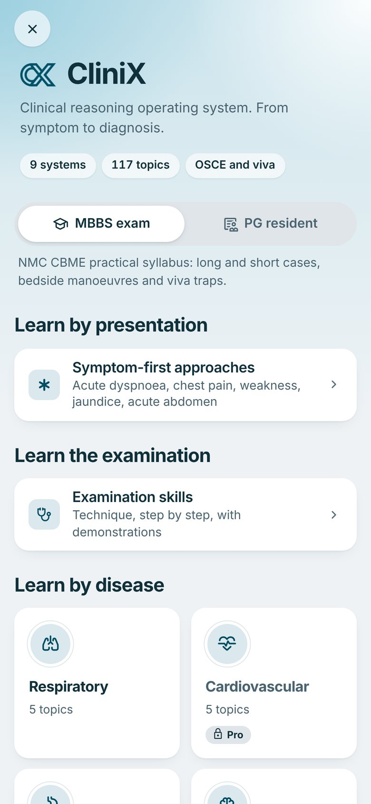
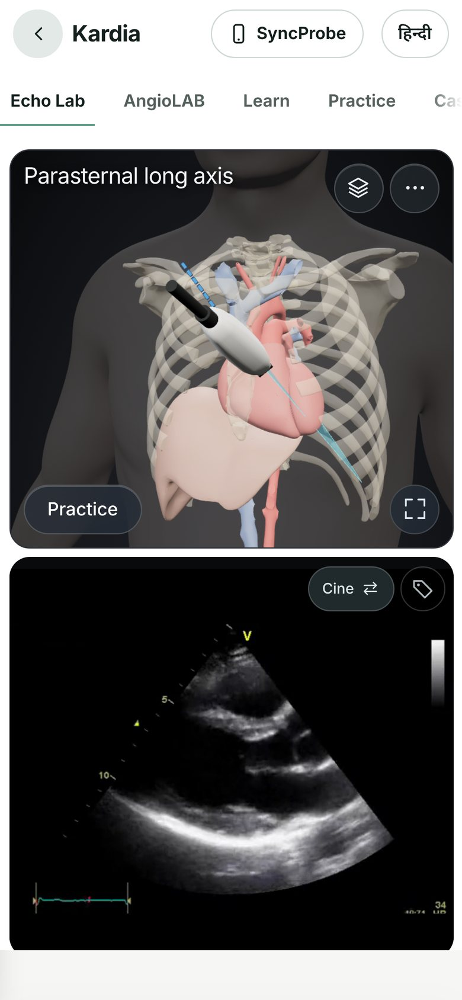
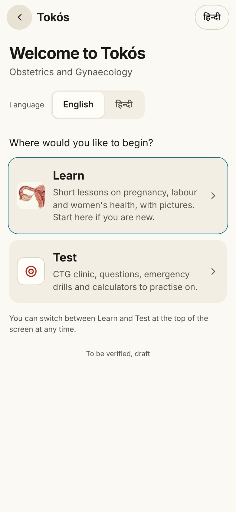

Learn it. Log it.
Do it at the bedside.
One app that takes a student from the first history to the PG exam, keeps the NMC logbook your residents must maintain, and stays useful on the ward the day after they qualify.



NMC PG e-Logbook
The digital logbook PGMER-2023 requires: weekly entries, monthly guide authentication, faculty verification and a department view.
CliniX bedside skills
9 systems, 117 topics. History, examination, OSCE and viva on the NMC CBME syllabus, with an AI tutor and a simulated patient.
Kardia echo and ECG
A 3D chest with a TTE probe, live sector image and real clips, plus 1,041 ECG lessons with quizzes.
Specialty trainers
Narkē anaesthesia (46 NMC competencies), Tokós CTG reading on real traces, Ophthalmós with 3,035 questions and simulators.
RadioAnatome and 3D Anatomy
35 CT and MRI slice atlases and a whole-body 3D model with 3,400+ structures, linked both ways.
PrepNucleus question bank
176,430 questions for NEET-PG, INI-CET, NEET-SS, USMLE and FMGE, with spaced repetition and mock tests.
SURGˣ surgical intelligence
Operative notes, protocols, step-by-step procedures, evidence and cases with a senior surgeon's questions.
MaiK, the clinical AI tutor
Ask any clinical question. Answers are grounded in the knowledge base and cite their sources.
A reference library
- Long chapters to read, then apply on your own
- Built for a desktop and the library login
- Written for a global reader, not Indian wards
- No logbook, no skills practice
StewardMD
- Practise the skill, then use it on the next patient
- Made for the phone in the white coat pocket
- ICMR, Indian antibiograms and Indian brands
- NMC logbook, OSCE, viva and exam prep in one app